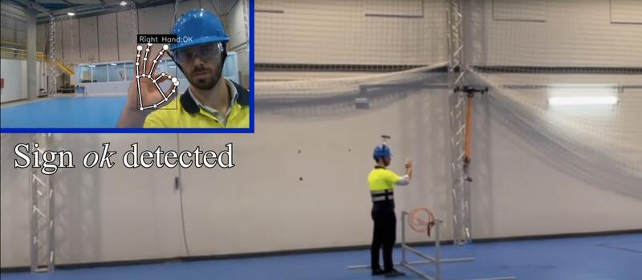
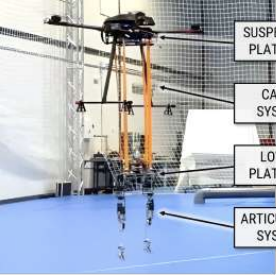
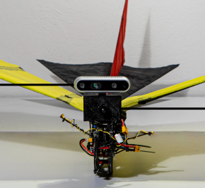
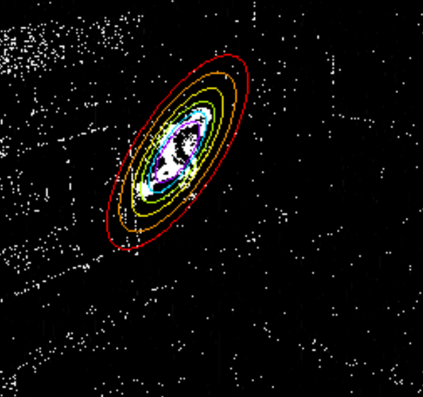
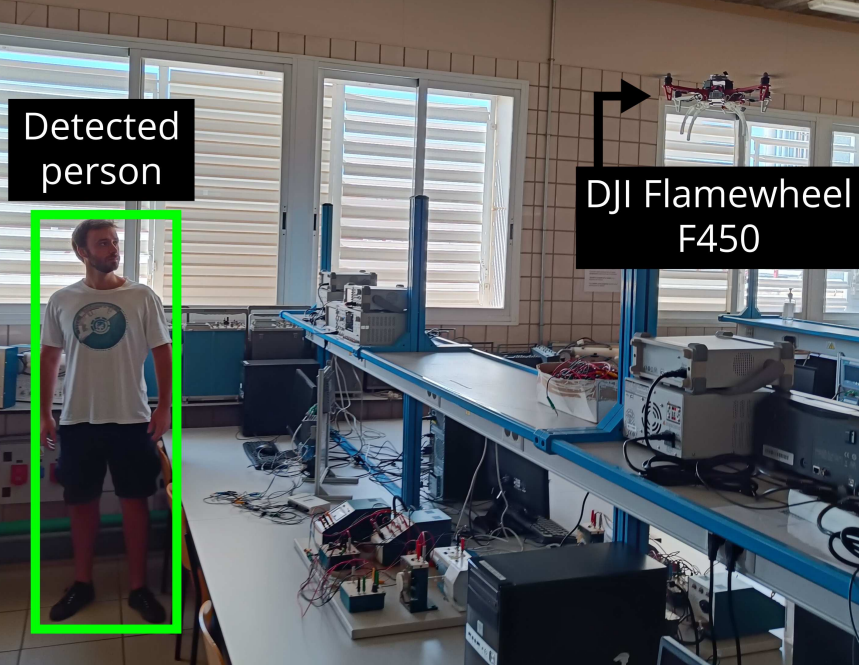
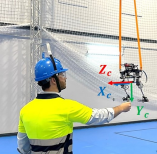

ABOUT ME

As a passionate Computer Vision Engineer with a foundation in robotics and artificial intelligence, particularly in deep learning, my educational background includes a B.Sc. degree in electronic, robotics, and mechatronics engineering, as well as an M.Sc. degree in logic, computing, and artificial intelligence, both awarded by the University of Seville, Spain.
My passion lies in the development of computer vision software solutions, and I am committed to following the MLOps methodology to achieve excellence. Through the integration of my expertise in machine learning and software engineering, I streamline and optimize the deployment, monitoring, and management of machine learning models in real-world applications. I find great enthusiasm in the application of cutting-edge deep learning models to address real-world challenges, thereby harnessing the full potential of AI to create meaningful and impactful solutions.
CURRICULUM VITAE
EXPERIENCE
2023-pres. | Computer Vision Engineer
2021-2023. | Research Assistant
2020-2021. | Software Engineer
EDUCATION
2021-2022 | Master in Logic, Computing, and Artificial Intelligence
2019-2020 | Automation Engineering - Laurea Magistrale
2017-2021 | Degree in Electronic, Robotics, and Mechatronics Engineering
OTHERS
2023 | euROBIN Week 2023 Organizing Committee
2022 | SSRR 2022 Local Arrangement Committee
×
PUBLICATIONS
2024 | Modelling and Identification Methods for Simulation of Cable-Suspended Dual-Arm Robotic Systems
Robotics and Autonomous Systems
PDF
CITE

This paper proposes rigid-body modelling and identification procedures for long-reach dual-arm manipulators in a cable-suspended pendulum configuration. The proposed model relies on a virtually constrained open kinematic chain and lends itself to be simulated through the most commonly used robotic simulators without explicitly account for the cables constraints and flexibility. Moreover, a dynamic parameters identification procedure is devised to improve the simulation model fidelity and reduce the sim-to-real gap for controllers deployment. We show the capability of our model to handle different cable configurations and suspension mechanisms by customising it for two representative cable-suspended dual-arm manipulation systems: the LiCAS arms suspeded by a drone and the CRANEbot system, featuring two Pilz arms suspended by a crane. The identified dynamic models are validated by comparing their evolution with data acquired from the real systems showing a high (between 91.3% to 99.4%) correlation of the response signals. In a comparison performed with baseline pendulum models, our model increases the simulation accuracy from 64.4% to 85.9%. The simulation environment and the related controllers are released as open-source code.
@article{d2024modelling,
title={Modelling and identification methods for simulation of cable-suspended dual-arm robotic systems},
author={D’Ago, Giancarlo and Selvaggio, Mario and Suarez, Alejandro and Gañán, Francisco Javier and Buonocore, Luca Rosario and Di Castro, Mario and Lippiello, Vincenzo and Ollero, Anibal and Ruggiero, Fabio},
journal={Robotics and Autonomous Systems},
pages={104643},
year={2024},
publisher={Elsevier}
}
2023 | A Comparison between Frame-based and Event-based Cameras for Flapping-Wing Robot Perception
IEEE/RSJ International Conference on Intelligent Robots and Systems (IROS 2023)
PDF
CITE

Perception systems for ornithopters face severe challenges. The harsh vibrations and abrupt movements caused during flapping are prone to produce motion blur and strong lighting condition changes. Their strict restrictions in weight, size, and energy consumption also limit the type and number of sensors to mount onboard. Lightweight traditional cameras have become a standard off-the-shelf solution in many flapping-wing designs. However, bioinspired event cameras are a promising solution for ornithopter perception due to their microsecond temporal resolution, high dynamic range, and low power consumption. This paper presents an experimental comparison between frame-based and an event-based camera. Both technologies are analyzed considering the particular flapping-wing robot specifications and also experimentally analyzing the performance of well-known vision algorithms with data recorded onboard a flapping-wing robot. Our results suggest event cameras as the most suitable sensors for ornithopters. Nevertheless, they also evidence the open challenges for event-based vision on board flapping-wing robots.
@inproceedings{tapia2023comparison,
author={Tapia, R. and Rodríguez-Gómez, J.P and Sanchez-Diaz, J.A. and Gañán, F.J., Rodríguez, I.G. and Luna-Santamaria, J. and Martínez-de Dios, J.R. and Ollero, A.},
booktitle={2023 IEEE/RSJ International Conference on Intelligent Robots and Systems},
title={Experimental Energy Consumption Analysis of a Flapping-Wing Robot},
year={2023},
doi={10.48550/arXiv.2309.05450}
}
2022 | Efficient Event-based Intrusion Monitoring using Probabilistic Distributions
IEEE International Symposium on Safety, Security, and Rescue Robotics (SSRR 2022)
PDF
CITE

Autonomous intrusion monitoring in unstructured complex scenarios using aerial robots requires perception systems capable to deal with problems such as motion blur or changing lighting conditions, among others. Event cameras are neuromorphic sensors that capture per-pixel illumination changes, providing low latency and high dynamic range. This paper presents an efficient event-based processing scheme for intrusion detection and tracking onboard strict resourceconstrained robots. The method tracks moving objects using a probabilistic distribution that is updated event by event, but the processing of each event involves few low-cost operations, enabling online execution on resource-constrained onboard computers. The method has been experimentally validated in several real scenarios under different lighting conditions, evidencing its accurate performance.
@inproceedings{ganan2022autonomous,
author={Gañán, F.J. and Sanchaz-Diaz, J.A. and Tapia, R. and Martínez-de Dios, J.R. and Ollero, A.},
booktitle={2022 IEEE International Symposium on Safety, Security, and Rescue Robotics (SSRR)},
title={Efficient Event-based Intrusion Monitoring using Probabilistic Distributions},
year={2022},
pages={211-216},
doi={10.1109/SSRR56537.2022.10018655}
}
2022 | Scene Recognition for Urban Search and Rescue using Global Description and Semi-Supervised Labelling
IEEE International Symposium on Safety, Security, and Rescue Robotics (SSRR 2022)
PDF
CITE

Autonomous aerial robots for urban search and rescue (USAR) operations require robust perception systems for localization and mapping. Although local feature description is widely used for geometric map construction, global image descriptors leverage scene information to perform semantic localization, allowing topological maps to consider relations between places and elements in the scenario. This paper proposes a scene recognition method for USAR operations using a collaborative human-robot approach. The proposed method uses global image description to train an SVM-based classification model with semi-supervised labeled data. It has been experimentally validated in several indoor scenarios on board a multirotor robot.
@inproceedings{sanchez2022scene,
author={Sanchaz-Diaz, J.A. and Gañán, F.J. and Tapia, R. and Martínez-de Dios, J.R. and Ollero, A.},
booktitle={2022 IEEE International Symposium on Safety, Security, and Rescue Robotics (SSRR)},
title={Scene Recognition for Urban Search and Rescue using Global Description and Semi-Supervised Labelling},
year={2022},
pages={238-243},
doi={10.1109/SSRR56537.2022.10018660}
}
2022 | Aerial Manipulation System for Safe Human-Robot Handover in Power Line Maintenance
Robotics: Science and Systems (RSS 2022) - Workshop in Close Proximity Human-Robot Collaboration
PDF
CITE

Human workers conducting inspection and maintenance (I&M) operations on high altitude infrastructures like power lines or industrial facilities face significant difficulties getting tools or devices once they are deployed on this kind of workspaces. In this sense, aerial manipulation robots can be employed to deliver quickly objects to the operator, considering long reach configurations to improve safety and the feeling of comfort for the operator during the handover. This paper presents a dual arm aerial manipulation robot in cable suspended configuration intended to conduct fast and safe aerial delivery, considering a human-centered approach relying on an on-board perception system in which the aerial robot accommodates its pose to the worker. Preliminary experimental results in an indoor testbed validate the proposed system design.
@article{ganan2022aerial,
author={Gañán, F.J. and Suarez, A. and Tapia, R. and Martínez-de Dios, J.R. and Ollero, A.},
journal={Robotics: Science and Systems (RSS 2022) - Workshop in Close Proximity Human-Robot Collaboration},
title={Aerial Manipulation System for Safe Human-Robot Handover in Power Line Maintenance},
year={2022},
doi={10.5281/zenodo.7153329}
}